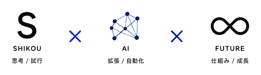

SHIKOU × AIには、「思考」と「試行」という2つの意味を込めています。
AIを導入すること自体が目的ではありません。
まず、人が考える。 何に困っているのか。 何を変えるべきなのか。 どこまでAIに任せるべきなのか。
そして、実際にAIを使って試してみる。 つくる。動かす。改善する。
思考と試行を繰り返しながら、業務と開発のあり方を変えていく。
それが、SHIKOU × AIの考えるAI活用です。

AIによって、できることは急速に増えています。
一方で、「AIを導入したけれど、結局使いこなせない」「便利なツールを作ったけれど、業務には定着しない」というケースも少なくありません。
私たちは、AIそのものを売るのではなく、AIを使って仕事の仕組みを変えることを大切にしています。
業務を整理し、課題を見つけ、最適な方法を考える。
必要であればAIツールを組み合わせ、アプリやシステムを開発する。
そして、実際の現場で使いながら改善する。
「考えて終わり」でも、「つくって終わり」でもない。
現場で動き続ける仕組みをつくることを目指しています。
AIには、大量の情報を処理し、繰り返し作業を高速に実行する力があります。
一方で、人には、現場を理解し、目的を決め、状況に応じて判断する力があります。
SHIKOU × AIは、その両方を組み合わせます。
人が考える。
AIが動く。
人が判断する。
AIがつくる。
そして、また改善する。
人とAIがそれぞれの強みを活かすことで、これまで時間や人手が必要だった仕事を、新しい形へ変えていきます。
私たちが目指しているのは、一度だけ動くAIではありません。
業務を実行し、結果を確認し、改善し、また実行する。
そんな「動き続ける仕組み」を少しずつ増やしていくことです。
AIによる業務自動化から、AIエージェント、AIアプリケーション、そして将来的には複数のAIが連携して仕事を進める仕組みまで。
小さな自動化から始めて、企業や個人の仕事そのものが変わっていくところまで支援します。
AIを使うことが特別なことではなくなる。
「この仕事、AIに任せられないかな？」
そう考えることが当たり前になる。
そして、AIを単なる便利なツールとして使うのではなく、人とAIが一緒に仕事を進める新しい働き方が当たり前になる。
SHIKOU × AIは、そんな未来を、まずは目の前の一つの業務からつくっていきます。
AIで業務と開発を変える。
| 屋号 | SHIKOU AI（シコウ エーアイ） |
|---|---|
| ブランド | SHIKOU × AI |
| 代表 | 福田 和弘（Fukuda Kazuhiro） |
| 事業内容 |
|
| お問い合わせ |
お問合せフォーム fkdkazu@gmail.com |
| ウェブサイト | https://shikou-ai.com/ |